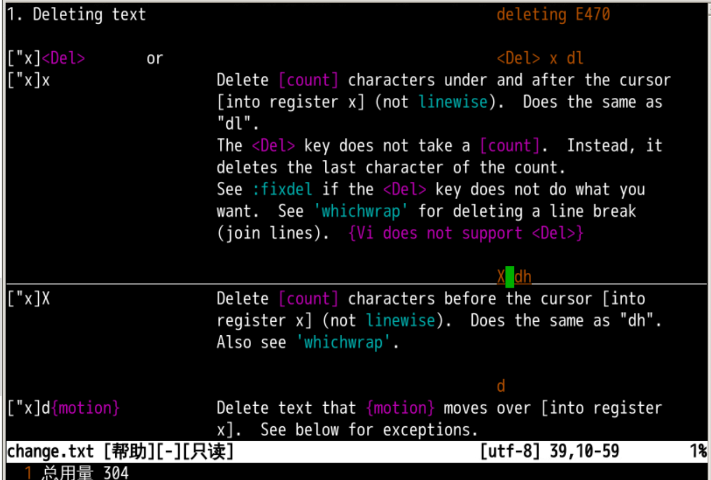
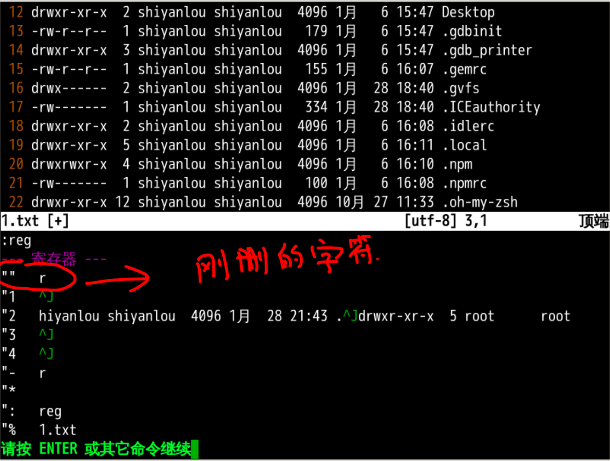
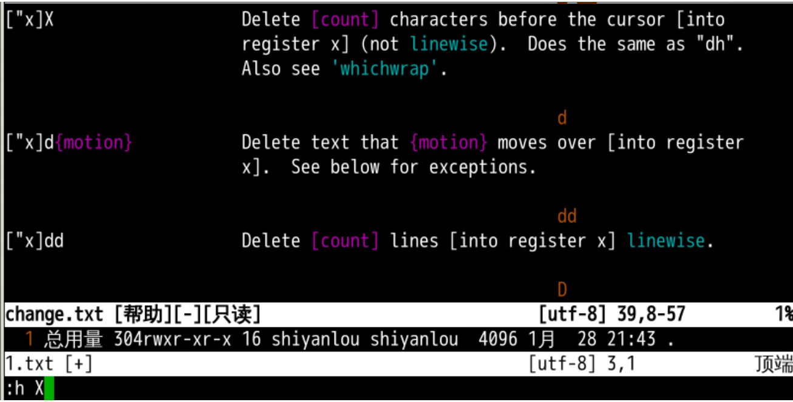
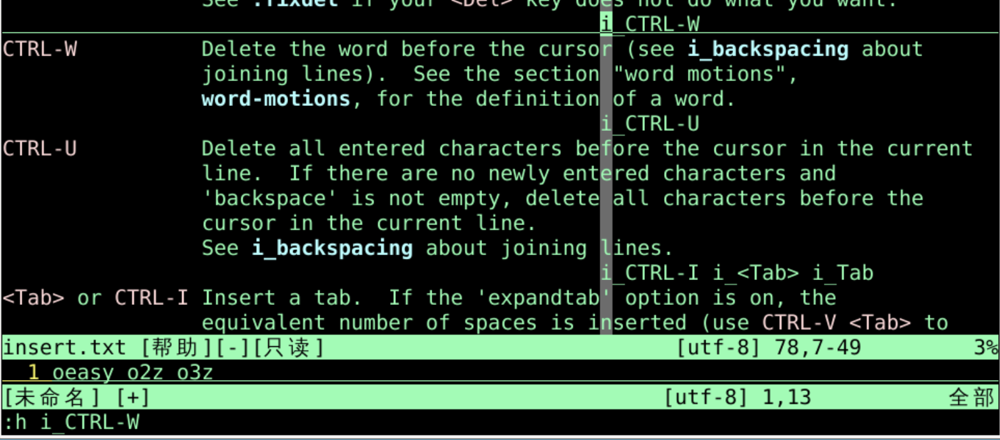
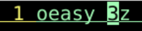
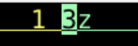
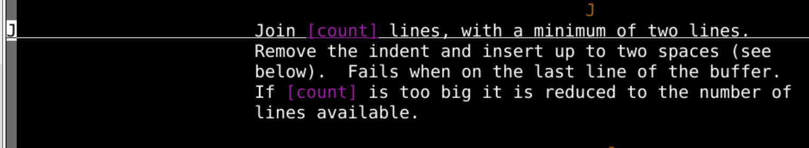

然后再输入 065
通过十六进制的 unicode
然后再输入 u2642 就可以通过 uncode 编码输入字符
通过二合字符的方式插入
Co 可以得到 ©:digraphs 查看二合字符列表
寄存器计算
=3+3（注意要有 =）我们掌握了在 vi 中插入字符的各种方法
:h delete 找到在 change.txt 里面有个 delete
xexecute 处死当前字符😱ls -lah > 1.txtvi 1.txt10x 就是删除 10 个字符[count]"" 中:reg 查看寄存器 
x 后面还有个 XX 的意思是 向前退格h X 查询手册 
"" 寄存器里面:h i_CTRL-w:h是查询帮助i_CTRL-w的i_CTRL-w什么意思呢？i代表insert插入模式CTRL-w代表CTRL+ww


db d^ 
Join 连接在一起?x 删除字符x 前面使用 [count] 进行翻倍10x"" 寄存器中:reg 查看寄存器状态X 退格"" 寄存器中